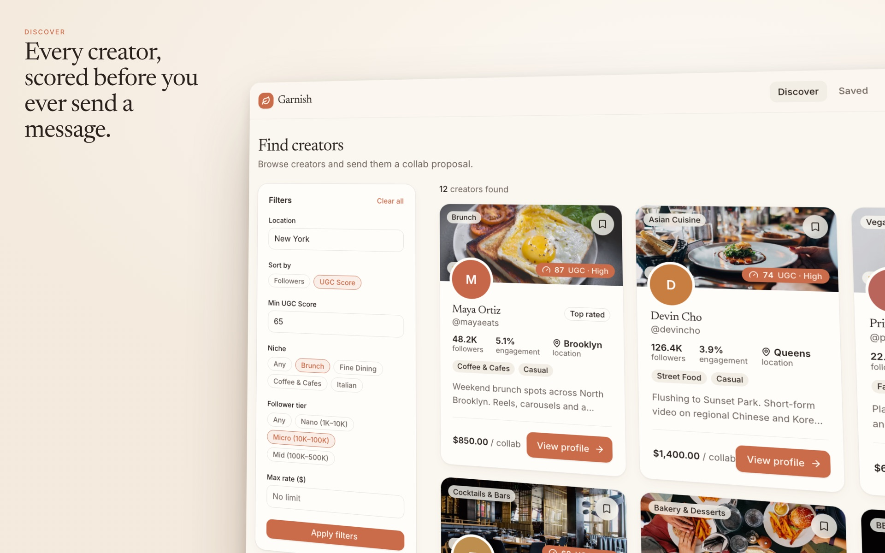
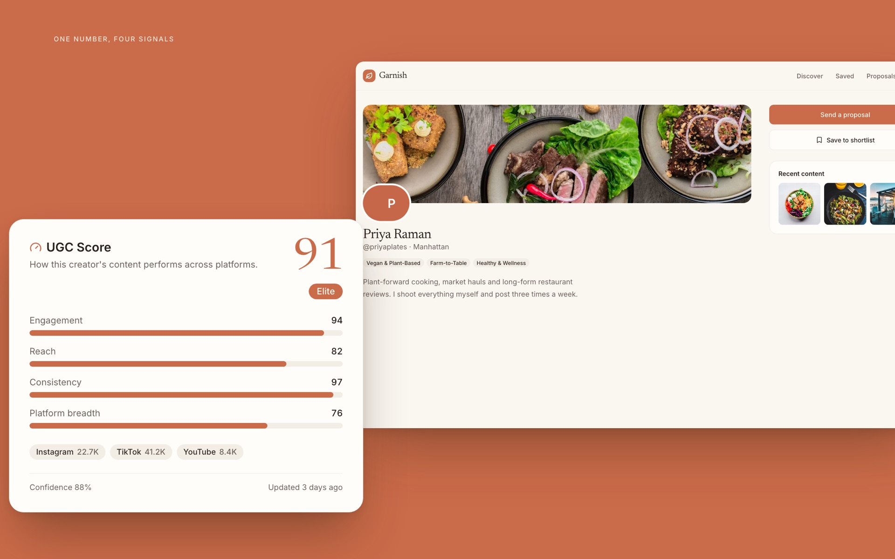
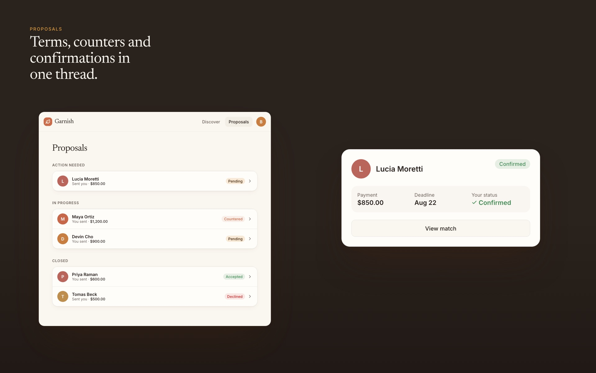

Garnish
-
Role
Solo design and build
Year
2025 – present
-
Goal
Let restaurants find and book UGC creators without email threads or agency fees
Status
In development, early access
-
Stack
Next.js 16, React 19, Tailwind v4, Supabase, Framer Motion
Link
To be added
Description
A two-sided marketplace connecting restaurants with food content creators. Restaurants post opportunities with budget and content requirements, creators browse and apply, and both sides track proposals and matches through role-specific dashboards.
Overview
Garnish is a marketplace for restaurants and food content creators to find each other, agree on a collaboration, and manage the whole thing in one place. Restaurants get local UGC creators without an agency retainer or a chain of cold emails. Creators get paid work that is actually near them and actually in their niche.
A restaurant posts an opportunity with a budget and content requirements. Creators browse Discover, filtered by niche, follower tier and collab type, and apply. From there the proposal moves through a lifecycle: applied, reviewed, accepted, matched. Each role gets its own dashboard, so a restaurant sees inbound applications while a creator sees where every pitch stands.
- Role-based onboarding for restaurants and creators
- Discovery with a filter sidebar for niche, follower tier and collab type
- Full proposal lifecycle: apply, review, accept, match
- Creator and restaurant profile pages with portfolio and stats
- Photo-forward design system built from scratch

Role & process
Solo, end to end. Product scoping, UX flows, the visual system, and every line of the frontend and backend.
- Scoped the product down to the two flows that matter: post an opportunity, apply to one
- Designed the system from scratch: clay-orange palette, Fraunces and Inter, Framer Motion card interactions
- Built on Supabase for auth, database and row-level security, so each role only ever reads its own side of a proposal
- Used the Next.js App Router with server actions rather than a separate API layer

Goals
Still in development, so the measure is what it is being built toward rather than what it has returned.
- Cut the friction out of restaurant ↔ creator matchmaking
- Build a two-sided marketplace where each role gets a genuinely distinct experience
- Ship production-quality UI without a design team